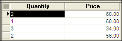
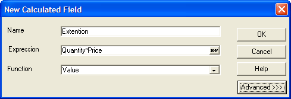
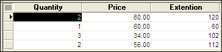

Using Calculated Values on Browses
You can use calculated values to display data in a browse. Unlike a table field, a calculated value is not stored in a table. Instead, its value is updated whenever the field is viewed, printed, or used in another calculation.
 Note :
Alpha Anywhere documentation and software has traditionally referred to the values that you calculate and place on a layout as "calculated fields". However, these values are not fields, because they are not stored in a table record. They are temporary variables that are created and calculated on demand.
Note :
Alpha Anywhere documentation and software has traditionally referred to the values that you calculate and place on a layout as "calculated fields". However, these values are not fields, because they are not stored in a table record. They are temporary variables that are created and calculated on demand.
To create a calculated value:
Drag the "
" entry from the Drag and Drop List to the browse. When the New Calculated Field dialog box appears, enter the calculated value's name in the Name box.
Enter the expression in the Expression box.
For example, your browse has a Quantity column and a Price column.

Sample Browse
You can create an Extension column that displays Quantity times Price.

Defining the Calculated Value

Browse with the New Calculated Value
See Also